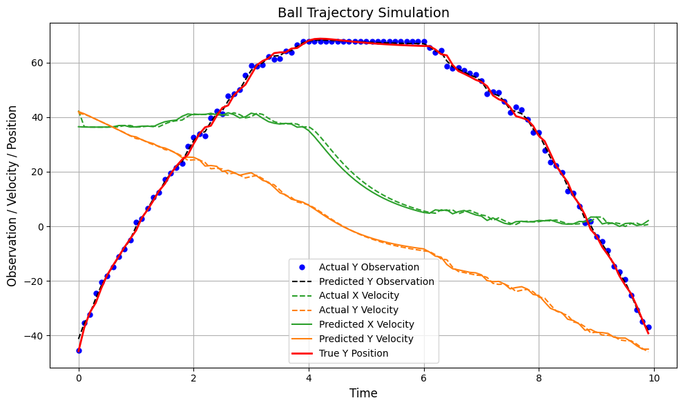
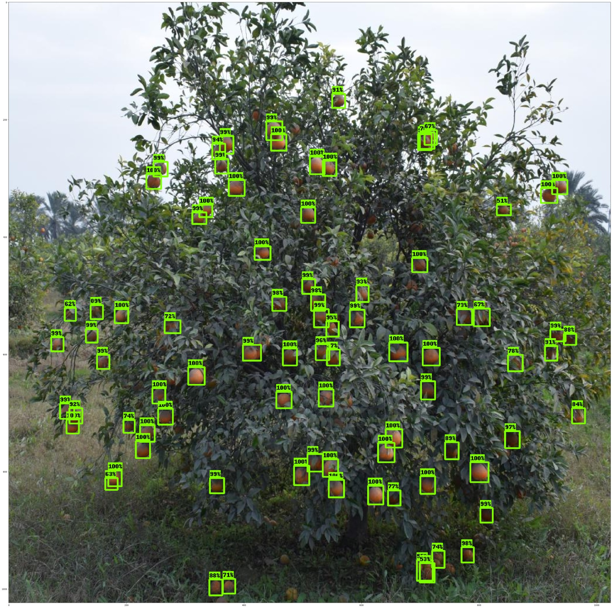
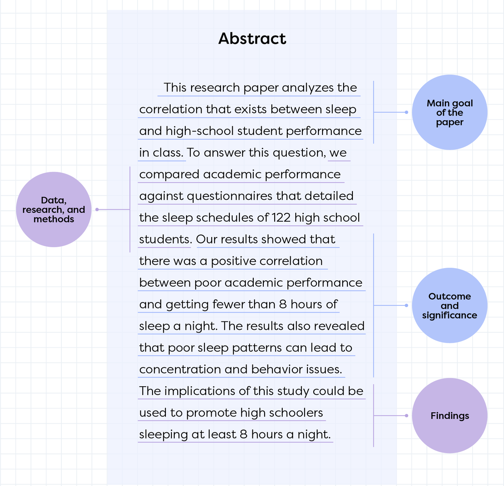
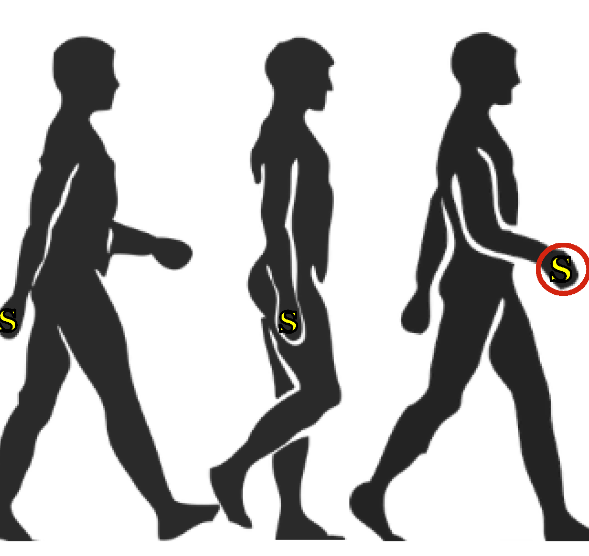
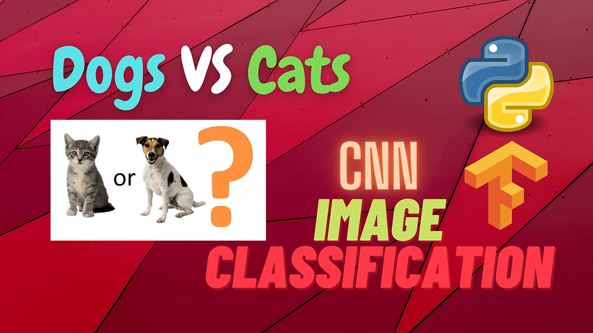

The project implements traditional blackjack tactics
with a focus on card counting and the basic strategy.
Monte Carlo techniques is used
to further improve blackjack strategy.
The experimental results provided insightful information
about how various parameters affect the performance of the
agents. Both on-policy and off-policy techniques yielded
comparable percentages of wins for the fundamental strategy,
but the on-policy strategy consistently generated larger
average winning bankrolls.

This project revolves around the advanced prediction of ball trajectories
using the Kalman and Particle filters. The primary objective was to leverage these filters—both
linear and non-linear—in order to understand their impact on ball trajectory forecasting.
The project delved into the fascinating realm of how these filtering algorithms could be adapted to
account for different launch conditions, observation intervals, and instances of observation failures.
By exploring these nuances, the project shed light on the adaptability
and robustness of the filters in real-world situations.

Estimating the crop load is essential for maximizing orange crop
productivity. I developed a system using computer vision methods and deep learning models that could count oranges with an
accuracy of 94% in 0.2 seconds. Orange dataset is collected manually from Punjab Pakistan and
annoated using labelImg. Faster RCNN model is used and TFOD api is used for inferencing.

In this project, NLP model to classify abstract sentences into the
role they play (e.g. objective, methods, results, etc) to enable
researchers to skim through the literature and dive deeper when
necessary. Hybrid models and transfer learning is used for training.

This project uses accelerometer and gyroscope data to determine whether the step was made or not. This project's major goal is to overcome the unbalanced dataset. To solve this issue, a weighted loss function with cross-entropy on unbalanced data is used. Finally, the model had an accuracy of 88% when making predictions.

With the help of TensorFlow, a simple CNN model that can predict whether an image is of a dog or a cat is built from scratch. A model has a 95% prediction accuracy rate, which is excellent intuition for classifying problems.